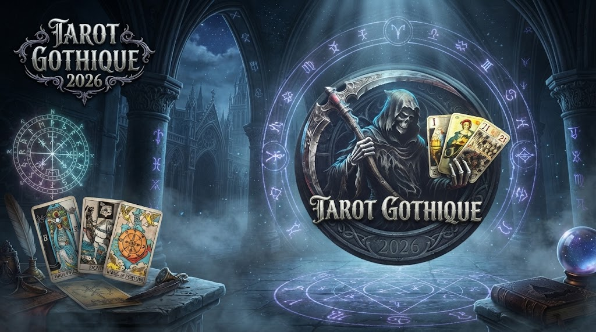

L'expérience ultime du jeu de tarot en ligne
Bienvenue sur le site officiel de Tarot Gothique 2026, un jeu de tarot social pour Android. Affrontez d'autres joueurs en ligne ou entraînez-vous en solo contre l'IA, dans un univers gothique aux finitions dorées, avec les règles officielles à 3, 4 et 5 joueurs.


Multijoueur & Solo
Affrontez d'autres passionnés de tarot en ligne ou entraînez-vous en solo contre l'intelligence artificielle.
Ambiance Gothique
Un jeu de tarot au design gothique soigné, teintes sombres et superbes finitions dorées pour votre jeu gratuit.
Règles Officielles
Apprenez toutes les règles de ce jeu de tarot (3, 4 et 5 joueurs) pour parfaire votre stratégie au tarot.
Comment jouer au tarot gothique ?
Tarot Gothique reprend le tarot français traditionnel : 78 cartes, des enchères en début de manche, puis un preneur qui affronte la défense pli après pli. Le principe se comprend en quelques minutes et se maîtrise au fil des parties : réussir son contrat en remportant les bonnes cartes au bon moment.
Le jeu compte les points à votre place et affiche le tableau des scores à la fin de chaque manche : vous vous concentrez sur la stratégie, pas sur les calculs.
Valeur des cartes, Bouts, seuils de points de chaque contrat : tout est détaillé sur la page règles officielles du tarot.
Le tarot à 3, 4 et 5 joueurs
- À 3 joueurs : une partie nerveuse où chacun joue pour soi.
- À 4 joueurs : la formule de référence : un preneur seul face à trois défenseurs.
- À 5 joueurs : l'appel du roi crée une alliance secrète que les autres joueurs doivent démasquer.
La variante gothique
Tarot Gothique ajoute deux règles maison, autour du roi appelé et de l'Excuse jouée en fin de manche, pour des parties encore plus tactiques. Elles sont expliquées en détail avec les règles du jeu.
Une application mobile Android gratuite, en solo ou en multijoueur
Entraînez-vous en solo contre une intelligence artificielle pour apprendre les règles à votre rythme, puis rejoignez des tables multijoueur en temps réel pour affronter d'autres passionnés de tarot.
Le jeu est entièrement gratuit pour toutes les tables et tous les modes. Les publicités restent discrètes et ne coupent jamais une partie en cours. L'application et ce site sont disponibles en huit langues.
Une ambiance gothique unique
Tables de jeu immersives, cartes aux finitions dorées et décors de cathédrale : Tarot Gothique 2026 a été conçu et développé par Cyril Darbost pour offrir un tarot fidèle aux vraies règles des soirées entre amis, avec une identité visuelle forte.
Découvrez les tapis de jeu et l'interface dans la galerie de captures d'écran du jeu, ou lisez l'histoire du projet sur la page à propos et questions fréquentes.
Questions fréquentes sur le jeu de tarot
Le jeu de tarot gothique est-il gratuit ?
Oui. Tarot Gothique est 100 % gratuit pour toutes les tables et tous les modes de jeu, en solo comme en multijoueur. Les publicités sont discrètes et n'interrompent jamais une partie en cours.
Peut-on jouer au tarot seul contre l'intelligence artificielle ?
Oui. Le mode solo vous oppose à une intelligence artificielle, idéal pour apprendre les règles ou s'entraîner entre deux parties avec des amis.
À combien de joueurs se joue le tarot ?
Le jeu propose les trois formules officielles, à 3, 4 ou 5 joueurs. À 5, le preneur appelle un roi pour désigner un partenaire secret.
Sur quels appareils peut-on jouer ?
Tarot Gothique est une application mobile Android pour smartphones et tablettes, à télécharger gratuitement sur Google Play. Le jeu et ce site sont disponibles en 8 langues.